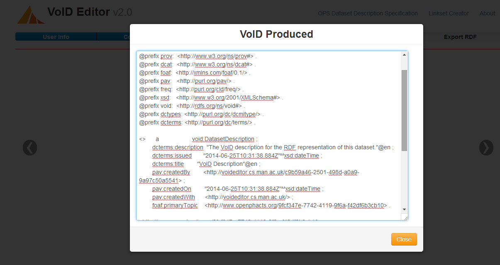
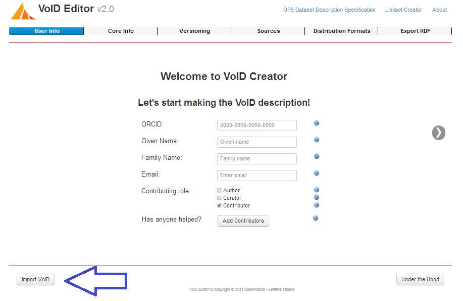
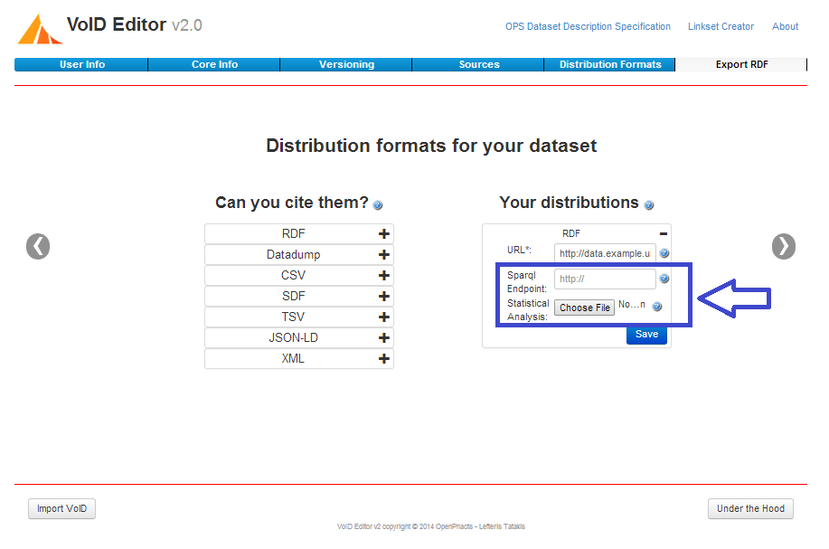
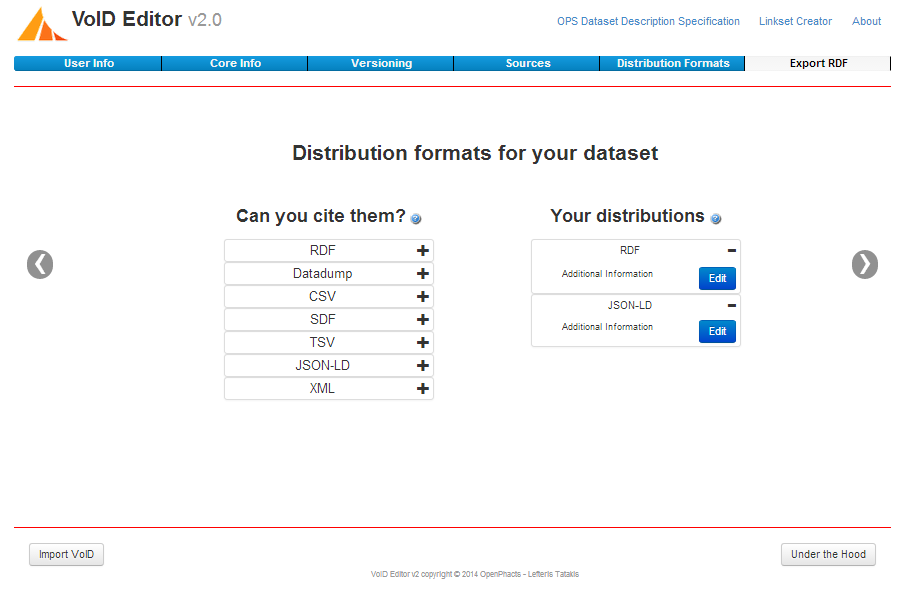
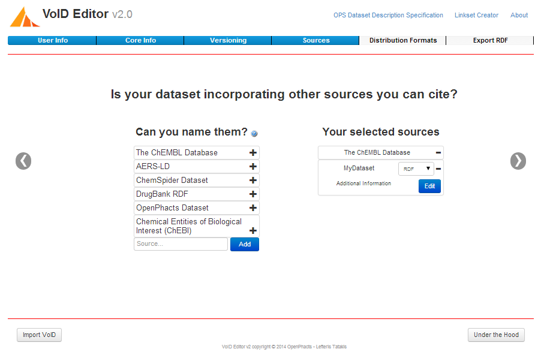

This project focuses on the Life Science domain within the Semantic Web, targeting the importance of provenance in the global project of Open PHACTS, Open Pharmaceutical Space. Open PHACTS is a multi-source pool of information which brings together Pharmaceutical, Chemical and Biological data. In order to be able to manage the life cycle of this information within the Open PHACTS repositories, Open PHACTS requires each additional individual data-source to have a small “header” file which provides all the necessary information to ensure provenance of the data. This file is called a VoID dataset description.
This VoID data description is created according to the Open PHACTS specification
Under the Hood
Pressing the under the hood button, you are able to see progress of creation of the VoID for the dataset being described.

Import VoID
Allows you t oupload previous versions of VoID dataset descriptions. This allows the user to easily update and modify VoID files. The VoID imported must be created by the VoID Editor.

ORCID
When providing your information in the "User Info" tab, you are able to provide you ORCID ID and the VoID Editor will go to the ORCID API retrieve your full name and add this information in the VoID dataset description.
Statistical Analysis
Allow the user to provide a RDF dataset or a spraql endpoint and the VoID Editor will query them in order to retrive some basic statistical analysis.

Dataset types
Through the VoID editor you are able to describe RDF and Non-RDF datasets and through this process create a valid VoID dataset descirption for the specific dataset.

Multiple Contributors
The VoID Editor allows you to add all people that contributed to the creation of the dataset. You are also able to define what role each contributor had : author, curator or contributed in some other way.
Incorporating Sources in your dataset
Allow the uses to incorporate data sources used in the dataset their are describing in a key feature of the VoID Editor.

Download VoID
Once you have created the VoID correctly and inputed all the necassery information the user can download the VoID dataset description.